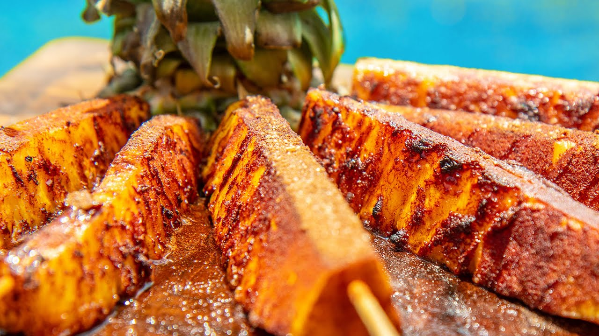

Grilled Brazilian Pineapple

Description
Are you looking for the perfect complement to a heavier main course?
This Brazilian grilled pineapple is the perfect side dish for steaks or meat heavy meals.
It also makes for a tasty vegan snack!
Ingredients:
- 1 cup brown sugar
- 2 tsp. ground cinnamon
- 1 pineapple - peeled, cored, and cut into 6 wedges
Steps:
- Preheat grill to medium-high heat and lightly oil the grate.
- Whisk brown sugar and cinnamon together in a bowl. Transfer into large, sealable plastic bag.
- Add pineapple wedges to the bag. Shake well to coat each wedge.
- After letting the pineapples rest, grill the wedges on the preheated grill until heated through for about 3 to 5 minutes on each side.